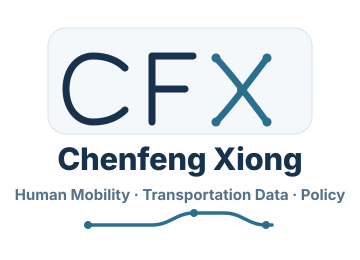

Vector drafts for the Chenfeng Xiong homepage sidebar identity.
A1 Network XMost direct transportation-network signal. Strong small-logo candidate.A2 Origin-Destination FlowSofter mobility-data feel, with C and X both treated as routes.A3 Block CutMost minimal and academic. Good if the sidebar should stay restrained.B1 Name RouteFull-name wordmark with understated route underline.B2 X CrossingPersonalized treatment of the X in Xiong as crossing routes.

A+B1 Sidebar BadgeCombined monogram and full name, designed for the left sidebar.